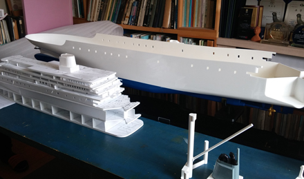
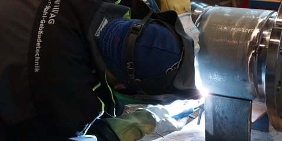
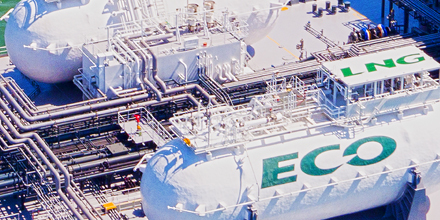

홈>
제품/기술>
기술 개발
기술 개발
고부가가치 선박 및 해양플랜트의 핵심기술 확보
연구소 소개
1984년 기본설계부의 개발팀으로 출발한 연구소는 선박해양연구소, 생산기술연구소, 산업기술연구소, 중앙연구소 등의 명칭을 거쳐 2017년 조선해양연구소로 기능을 통합하여 운영하고 있습니다. 고부가가치 선박 및 해양플랜트 관련 기술에 대한 기술개발은 조선해양연구소를 중심으로 진행되고 있으며 거제, 대전, 판교 R&D센터는 거점별 연구개발 전문화 전략을 바탕으로 기술 경쟁력을 강화하기 위해 노력하고 있습니다.
조선해양연구소는 ‘사업과 연계한 연구개발(R&D) 수행, 제품 경쟁력 강화를 위한 성능·원가경쟁력 제고, ICT 기술 접목을 통한 설계·생산 효율 극대화’를 목표로 설정하여 다양한 연구과제를 수행하고 있으며, 지속적인 연구개발 활동과 기반시설 확충을 통해 고객이 요구하는 품질과 최고의 제품 성능을 구현하기 위해 최선을 다하고 있습니다.
- 예인수조
- 대전에 위치한 세계 최대 규모 상업용 예인수조(길이 400m, 폭 14m, 깊이 7m)를 기반으로 선형·추진기의 성능 및 선박 운동·조종 안정성을 확보하고 연료 절감장치를 개발 하는 등 선박의 성능향상 및 선종 개발에 주력하고 있습니다.
- 예인수조는 선형유도모터 구동으로 저소음·저진동이 특징인 고속선용 예인전차(최대 속도 18m/s)와 일반선용 예인전차(최대속도 5m/s), 대진폭 제어 조종시험대차와 실제 해상의 파도를 모사한 40분할 조파장치를 갖추고 있습니다.

- 모형 제작
- 모형시험으로 실제 선박성능을 정확히 추정하려면 실제 선박 및 추진기를 축소한 정밀모형이 필요합니다. 이를 위해 초정밀 10축(5축 양축가동) CNC Machine와 5축 CNC Machine을 이용, 10미터 길이 모형선과 최대 직경 0.3미터의 추진기를 정밀하고 신속하게 가공합니다.
- 지금까지 실선대비 ±1% 수준의 오차로 Ship Model 700척, Propeller Model 900기를 제작하였으며, 연구소에선 추진기·부가물 개발 및 모형시험의 정확도 향상을 위한 새로운 모형제작 기술 개발에 매진하고 있습니다.
신공법
- One-time setting 생산기술
- 블록의 탑재공법이 메가블록→기가블록→테라블록 공법으로 점차 발전함에 따라 탑재 블록이 대형화되고 그 형상 또한 복잡해져 조립 난이도가 급격히 증가하였으며 이로 인한 치수품질의 저하 및 생산성 감소 문제를 해결하기 위해 대형블록의 안정적 치수품질을 확보할 수 있는 One-Time Setting 생산기술을 확보하였습니다.
- 대형블록의 변형제어를 자동화하고 광학 시스템을 활용하는 신개념 대형 구조물 계측 시스템과 치수품질을 분석·통합 관리하는 시스템을 구축하여 해양플랜트용 대형블록에 적용함으로써 시스템 기반의 치수품질 확보 및 안정적인 대형블록 생산체제 구축으로 세계 최고수준의 조립 생산성을 실현하였습니다.

- 배관 용접 검사 자동화
- 크고 두꺼운 배관을 효율적으로 용접할 수 있는 공법을 개발하여 생산성을 향상시켰습니다. Hot-Wire TIG 오비탈 용접공법은 기존 보다 3배 이상, FCAW 오비탈 용접공법은 기존보다 6배 이상 용접속도가 향상되었습니다.
- 또한, 배관 내부를 주행하며 용접 후 배관을 청소·검사 할 수 있는 장비를 개발하였으며 세계 최초로 옥외 작업장에서 배관 내부 방사선 검사를 수행하여 방사선 검사 시간과 피폭시간을 대폭 단축시켰습니다.
- Drawingless yard(3D도면)
- 제작처에서 2D도면을 참조해 제작하던 기존 방식을 벗어나, 3D 모델로부터 직접 3차원 형상정보와 각종 제작, 가공정보를 추출 후 제작처로 전송함으로써 2D도면 없이 제작이 가능하도록 개발했습니다.
- 제작도뿐만 아니라 설치도까지 확장되면 도면 없는 Drawingless Yard가 구현됩니다.
신기술
어려운 경영환경 속에서도 조선/해양 분야의 선도기업으로 굳건히 자리매김할 수 있도록
중장기 선행기술을 확보하고 확보 기술의 상용화를 통하여 신제품 및 신기술 개발에 앞장서겠습니다.
ESD(에너지 저감장치)
- SAVER Air
- 공기 윤활 시스템(SAVER Air)은 선체 바닥에 공기를 분사하여 해수와의 마찰 저항을 줄여 선박의 연비를 향상 시키는 친환경 시스템입니다.
- 삼성 중공업이 자체 개발한 SAVER Air 를 170,000m3급 LNG선에 적용한 결과, 5% 이상의 연료 절감 효과가 입증되었으며, 향후 다양한 선종에 확대 적용해 수주 경쟁력을 향상시키고자 합니다.
- SAVER Stator / Stator-D
- 삼성중공업이 독자 개발한 SAVER Stator-D는 선박의 프로펠러로 유입되는 해수의 흐름을 균일하게 함으로써 프로펠러의 추진력을 증가시켜 연비를 향상시키는 연료 절감 장치입니다.
- 삼성중공업은 SAVER Stator-D를 선박에 적용해 약 2%의 연비 절감 효과를 입증했으며, 이를 통해 향후 수주 경쟁력 강화에 기여할 것으로 기대합니다.
- SAVER CAP
- 대형 컨테이너선의 선수에 설치해 선체 주변의 해수 흐름을 제어함으로써 연비를 향상시키는SAVER CAP을 개발했습니다. SAVER CAP을 통해1.8%~3.7% 수준의 연비가 개선되며 선체 진동도 줄어 선수 의장품과 컨테이너 박스의 안전한 보관이 가능합니다.
ICT융합 스마트십
- 스마트십 솔루션(SVESSEL)
- 삼성중공업 스마트십은 정보통신 기술과 선박운용 기술을 융합하여 경제적이고 안전한 운항이 가능한 선박을 말하며, 클라우드 데이터 센터를 기반으로 선박과 관련된 모든 데이터를 통합 관리함으로써 육상에서 원격 지원 및 생애주기 서비스가 가능한 육해상 통합 관리시스템입니다.
- 선내 경제/안전 운항 솔루션(SVESSEL Onboard)
- 삼성중공업의 독자적인 IoT 플랫폼인 BIG(onBoard Integrated Gateway)을 통해 실시간으로 운항 및 기관 데이터를 수집합니다.
- SVESSEL Onboard 는 선박에 탑재된 솔루션으로 경제적이고 안전한 운항이 가능하도록 항해사나 기관사에게 정보를 제공 하고, 의사결정을 지원합니다.
- 육상 관제 솔루션(SVESSEL Onshore)
- 선박의 실시간 데이터를 모아서 삼성중공업이 그 동안 인도한 선박들 약 950척의 실시간 위치를 모니터링하여 관제하고 있습니다.
- 실시간 데이터를 빅데이터 기술을 활용해서 분석하고 육상에서 의사결정을 할 수 있도록 지원하여 현재 보증 기간동안 선주사들에게 제공하고 있습니다.
LNG Value Chain

- LNG 연료공급 시스템(S-Fugas)
- 최근 2행정 LNG 연료 추진 엔진이 LNG선에 적용되고 있습니다. MEGI 엔진은 300bar의 고압 FGSS가 요구되며, X-DF 엔진은 16bar의 저압 FGSS가 요구됩니다.
- 삼성중공업은 LNG 연료공급 시스템(S-Fugas)을 자체 개발해 엔진별 최적의 LNG FGSS를 제공하고 있습니다.
- 부분 재액화 시스템(S-Reli)
- LNG 운반선에서 발생하는 증발가스는 선박의 엔진 연료로 사용되었으나, 최근 고효율 엔진이 적용되면서 증발가스의 연료 전환이 크게 줄었습니다. 삼성중공업은 선박 연료로 사용되지 못한 증발가스를 재액화해 화물창에 저장하는 부분재액화 시스템(S-Reli)을 개발했습니다.
- S-Reli를 적용할 경우 연간 약 만 톤의 증발가스를 재액화할 수 있으므로, 엔진과 병행운전을 통해 증발가스의 소모 없이 최적의 상태로 운항할 수 있습니다.
- 재기화 시스템(S-Regas)
- 삼성중공업은 액화 상태로 저장·운송된 LNG를 사용하기 위해 다시 기체로 만드는 LNG 재기화 시스템(S-Regas)을 독자 개발했습니다. 해수를 이용하는 직접식과 글리콜 혼합액을 이용하는 간접식이 있으며, 다운타임을 최소화하고 운전자 편의를 고려한 제어기술이 적용됐습니다.
- S-Regas의 국산화를 통해 원가 절감은 물론, 납기와 품질을 효율적으로 관리할 수 있어 삼성중공업의 수주 경쟁력을 한 층 강화했습니다.